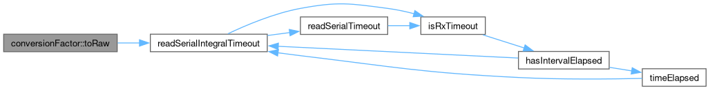

|
Speeduino
|
Loading...
Searching...
No Matches
|
Speeduino
|
Scale and translate signed/unsigned values to convert between "raw" & "user" values. More...
#include <units.h>
Public Member Functions | |
| constexpr TUser | toUser (TRaw raw) const |
| Convert a value from raw page value to user value. | |
| constexpr TRaw | toRaw (TUser user) const |
| Convert a value from a user value to raw page value. | |
Public Attributes | |
| uint16_t | scale |
| Scale factor, must be >0. | |
| int16_t | translate |
| Translation - can be negative. | |
Scale and translate signed/unsigned values to convert between "raw" & "user" values.
Terminology:
The scaling and translation values are used as follows
Typically these will be the same scale and translate values as specified in the TunerStudio configuration file (ini)
Rationale: It encapsulates all conversion factors and operations in one place
Background: For memory footprint reasons, many tune parameters are stored using a smaller type than the full numeric range requires. E.g.
See section 4.4.7, Scale and Translate, of the TunerStudio ECU definition manual.
| TUser | The type of a user value. E.g. int8_t |
| TRaw | The type of a raw value. E.g. uint8_t |
Convert a value from a user value to raw page value.
It's the callers responsibility to make sure the converted value fits into the destination type

Convert a value from raw page value to user value.
It's the callers responsibility to make sure the converted value fits into the destination type after translation & scaling
Scale factor, must be >0.
Translation - can be negative.